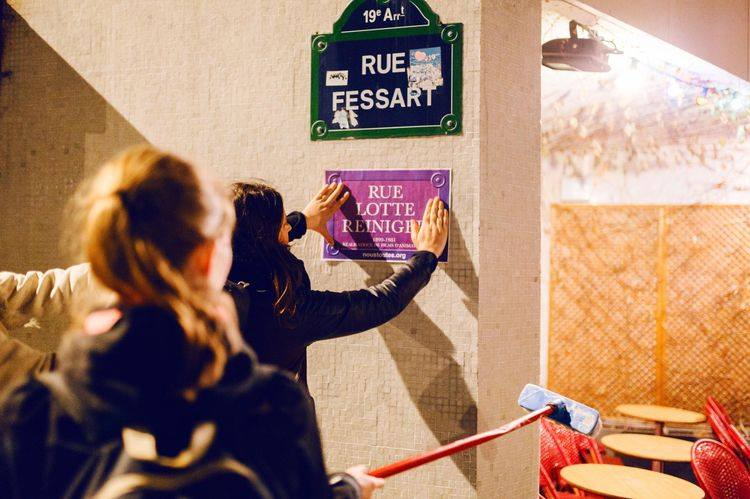

A qui appartient la rue?
Les femmes: Grandes oubliées du paysage urbain parisien
Le 8 mars dernier, à l’occasion de la journée internationale des droits des femmes, nombreuses sont celles qui ont défilé dans les rues parisiennes. Si cette marche est l’occasion de réaffirmer des droits dûment acquis et de revendiquer davantage d’égalité, elle revêt également un caractère symbolique fort : la réappropriation de l’espace urbain. Car si la rue appartient pour une journée aux femmes, à qui appartient-elle le reste de l’année ? Comment le patriarcat se reflète t-il au quotidien dans les rues, les allées, les avenues ?
Nous vous emmenons le temps d'une balade dans la capitale afin d'explorer un paysage qui nous est familier, mais que nous examinons finalement fort peu souvent. Comment sont répartis les noms de rues ? Que reflètent-ils de notre société ? Quels changements sont à venir ?
Une domination masculine évidente
Un Gender Gap onomastique
Le premier constat frappant qui s'impose au promeneur parisien est l'inégale répartition des dénominations de rues entre les deux sexes. En effet, seules 5% des voies portent des noms de femmes, contre 54% qui portent des noms d'hommes.
L'espace public parisien n'est ni féminin, ni neutre : il est masculin.
Les infographies que vous allez découvrir sur ce site soulignent bien la place mineure qui a été accordée aux femmes dans la dénomination des rues.Cette omniprésence masculine n'est-elle pas un peu oppressive ?
Un manspreading urbain
En plus d'être moins nombreuses, les voies qui portent des noms de femmes sont également moins importantes physiquement et symboliquement que celles qui portent des noms d'hommes. Cette marginalisation se manifeste par le fait que les voies nommées d'après des femmes sont plus bien plus souvent des impasses que les voies portant des noms d'hommes (en proportion). Par ailleurs, parmi les avenues et boulevards, très rares sont ceux qui portent le nom d'une répresentante du deuxième sexe.


Posons à présent les vraies questions... Qui a la plus longue ? Il apparaît que même sur ce terrain-là, les hommes sont les grands gagnants : en moyenne, les rues, avenues, boulevards, impasses qui portent des noms de femmes sont moins longues.

Le cumul de ces inégalités genrées à la fois dans la fréquence de dénomination des rues et dans l'espace physique qu'elles occupent a pour conséquence une répartition très désequilibrée de l'espace attribué à chaque sexe dans l'agglomération parisienne. Ce manspreading urbain est tel que mises bout-à-bout, les rues qui portent des noms de femmes permettraient seulement d'atteindre Mantes-la-Jolie en partant de Paris, quand les rues qui portent des noms d'hommes nous emmèneraient jusqu'à Barcelone ! C'est dire le peu de place qui est accordé aux femmes...
Un héritage androcentré : une ville pensée par les hommes
La physiologie des hommes définit la plupart des sports, leurs besoins définissent la couverture de l’assurance auto et de l’assurance santé, leurs biographies socialement construites définissent les attentes du monde du travail et les profils de carrières prospères, leurs points de vue et leurs préoccupations définissent la qualité dans le système de bourses d’étude, leurs expériences et obsessions définissent le mérite, leur objectivation de la vie définit l’art, leur service militaire définit la citoyenneté, leur présence définit la famille, leur incapacité à s’entendre les uns avec les autres -leurs guerres et leurs règnes – définit l’histoire, leur image définit Dieu, et leurs organes génitaux définissent la sexualité.
Une brève histoire de la toponymie parisienne
Pour comprendre la structure actuelle de la ville de Paris, intéressons-nous à l'historique des rues de Paris.
Jusqu'au XVIIIe siècle, la toponymie parisienne ne suivait pas une procédure très rigoureuse : les voies étaient nommées selon la bourgade auxquelles elles aboutissaient, avaient plusieurs noms, ou pouvaient encore se référer à des voies différentes. Le dévelopement de la capitale s'est accompagné d'une normalisation des noms des rues — et c'est pourquoi les premiers décrets n'apparaissent que tardivement. Parmi les rues de Paris existant encore aujourd'hui, la plus ancienne voie officielle ‐ dont nous connaissons la date de décret ‐ date de 1685, et n'a pas de genre : il s'agit de la place des Victoires. La plus ancienne rue associée à un nom masculin, la rue de Bourgogne ‐ en référence au Duc de Bourgogne, petit-fils de Louis XIV ‐, date de 1707. A l'inverse, les plus anciennes rues de femmes ont été nommées bien plus tardivement, soit un siècle plus tard : la rue Sainte-Elizabeth, nommée en 1807, est la première, suivie des rues Marie Stuart (1809) et Anne d'Autriche (1814).
Les hommes décidèrent de créer une ville à leur image et les femmes présentes dans l'espace urbain n'étaient que corollaires.
Alors que les hommes ont depuis longtemps colonisé l'espace urbain (voir graphe ci-dessous), l'arrivée de grandes personnalités féminines dans les rues de Paris est tardive et mesurée. Les rues de femmes les plus anciennes ont bien souvent été accordés par des hommes. En effet, la richesse de maris ou de pères pouvait permettre d'éterniser leur amour et de rendre un dernier hommage à leurs proches : par exemple, la rue Amélie (1824) doit son nom à la fille d'un propriétaire habitant là.
C'est plus tard que des femmes reconnues pour leurs travaux et ouvrages ont pu se frayer une place dans les noms des rues de Paris. L'année 1867 voit l'arrivée de Madame de Sévigné, de Sophie Germain (mathématicienne du 18e siècle). Plus tard c'est Mme de Montespan qui se voit attribuer une rue. Les consciences se réveillent doucement à partir du milieu du 20e siècle. On peut croiser plus de noms féminins au cours d'une flânerie, qui ne sont des personnalités ni royales, ni religieuses, ni intimes. Maryse Bastié a sa rue en 1956, Colette en 1966, Madeleine Daniélou en 2009. Les noms de Marcelle Henry et Grace Hopper sont donnés à deux places en 2017.
A quels noms, Paris reconnaissante ?
Qui sont les femmes et les hommes qui ont eu l'honneur de prêter leur nom à une voie parisienne ? Ville des Lumières oblige, beaucoup de voies portent les noms d'intellectuels et d'artistes. Chez les hommes, on trouve également un certain nombre d'hommes d'Etat et d'hommes de guerre, mais aussi des scientifiques (médecins et ingénieurs, par exemple).Fun fact : le profil qui ressort le plus dans notre analyse est résistante chez les femmes, et... propriétaire chez les hommes !
Remarque : pour obtenir ces nuages de mots ("wordclouds"), nous avons travaillé à partir des données d'historique relatives aux individus, disponibles dans les données liées aux rues de Paris. Pour plus d'informations sur le modèle construit, vous pouvez consulter notre Github (références en bas de page).
Vers un changement progressif?
Qui choisit le nom des rues ?
Cette vidéo du journal "Le Monde", datant de 2017, explique en détail le processus qui préside à l'attribution des noms de rues à Paris et souligne les problématiques associées à cet enjeu politique. Les possibilités de changements ne s'appliquent qu'aux dénominations de nouveaux lieux qui sont assez limités, et les pouvoirs publics prennent leurs décisions à partir des propositions citoyennes qui sont souvent assez masculino-centrées.
Les initiatives de la ville de Paris
La Commission de dénomination des rues, voies, espaces verts et équipements publics municipaux, présidée par Catherine Vieu-Charier, a fait de la visibilité des femmes dans l'espace publique une priorité (voir ici)
Evolution des choix de détermination des noms de rues
Nomme-t-on plus de rues d'après des personnalités féminines ces dernières années ? C'est visiblement bien le cas : depuis les années 2010, presqu'autant de nouvelles rues portent des noms de femmes que d'hommes.
Où sont les femmes?
Comment se répartissent les rues de femmes dans la capitale ? Dans les visualisations ci-dessous, nous vous invitons à partir à la recherche des quartiers où les rues nommées d'après des femmes sont en proportion plus nombreuses. On peut même dire qu'elles sont au centre de l'attention...
Les voies portant des noms de femmes sont en proportion peu nombreuses dans l'ouest et le sud-ouest parisien, quartiers résidentiels plutôt bourgeois. A l'inverse, certains quartiers du nord et de l'est de Paris, plus populaires, comptent plus de 20% de voies portant des noms de femmes !
Et pour terminer sur cette exploration
Une revue des actions féministes
Dans le but de lever l'attention sur cette inégalité entre les genres, certaines associations féministes organisent des campagnes de renomination informelles des rues. On peut par exemple citer les actions de Nous Toutes, visibles sur InstagramInstagram ou celles d'Osez le féminisme. Grâce à elles, un millier de rues ont vu une nouvelle plaque apposée sous l'ancienne des noms exclusivement féminins, pour rendre hommage à toutes les grandes femmes oubliées.
Plus récemment, on peut trouver dans les rues de Paris des affiches placardées sur les murs, avec des messages écrits à la peinture. Si elles visent en premier lieu à dénoncer les violences faites aux femmes et les féminicides, on peut également voir dans ces actions menées par des femmes, une réappropriation de l'espace urbain. Nous vous invitons à consulter leurs actions sur la page Instagram collages_feminicides_parisInstagram.
Pour les actions de "Nous Toutes" et d'"Osez le féminisme" : ici et ici.
Ce site a été réalisé par :
Naïla El Haouari, Zoé Fontier, Laure-Hélène Genuyt, Colombe Saillard.
Nous sommes étudiantes en 3e année à l'ENSAE IP Paris, école d'ingénieur spécialisée dans l'économie et la statistique. N'hésitez pas à nous contacter si vous avez des questions sur ce site : aquiappartientlarue@gmail.com !
Données utilisées :
Pour effectuer nos analyses, nous avons utilisé les données publiques relatives aux rues de Paris, disponible en suivant ce lien. Nous avons complété ce jeu de données par la page Wikipédia consacrée à la Liste des voies de Paris se référant à un nom de femme, afin de retrouver le genre des rues.
Si vous souhaitez en savoir plus sur la construction du jeu de données ayant servi à notre analyse, il est disponible sur Github.
Sources des images : Libération, Le Point.